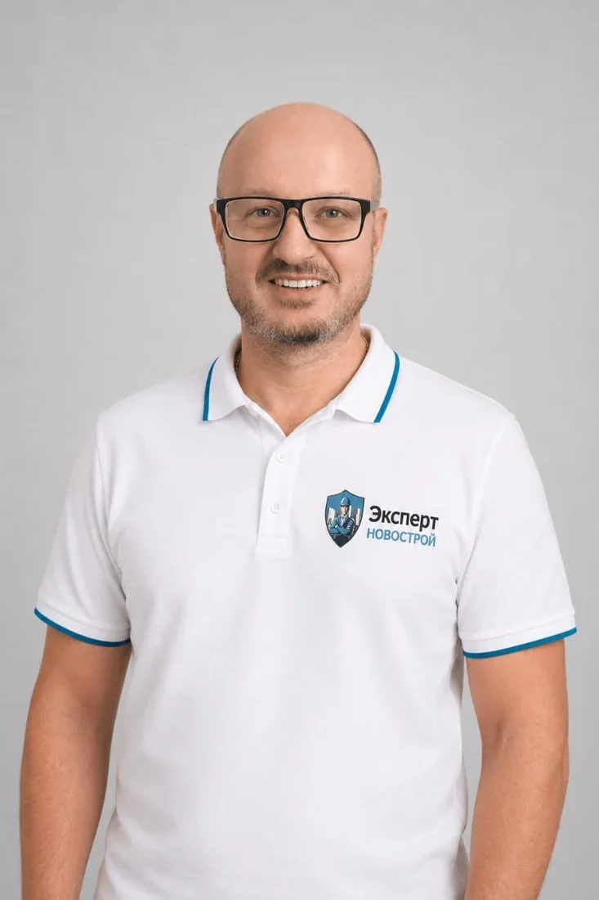

Информация об объекте

Проводит приёмки квартир в новостройках и помогает оформить замечания в понятный результат осмотра.

ЖК «Юнино»Результат приемки квартиры
Специалист проверил квартиру площадью 42,8 м² с чистовой отделкой и зафиксировал в акте осмотра 75 нарушений для передачи застройщику.
Результат осмотра
Все замечания
Коридор (7.0 м²) 14 замеч.
ДВЕРИ
№1. Зазоры в местах неподвижных соединений элементов дверного блока межкомнатной двери более 0,3 мм (ГОСТ 475-2016 п.5.3.7)
Превышение допустимых зазоров нарушает эстетику дверного блока. Необходимо подтянуть крепежные элементы обеспечивая зазвор величиной не более 0,3 мм. В худшем случае использовать герметик в цвет дверного блкоа для устранения зазоров
№2. Люфт дверной ручки входной двери (ГОСТ 538-2014, п.5.3.2-п.5.3.3)
Люфт ручки снижает удобство эксплуатации и указывает на износ механизма. Необходимо затянуть крепежные винты и при необходимости заменить изношенные детали фурнитуры. В случае сильного износа рекомендуется полная замена ручки на новую

№3. Механические повреждения или следы коррозии фурнитуры: петли, ручки, замки, стопоры входной двери (ГОСТ 31173-2016: п.5.5.6; ГОСТ 538-2001 п.5.6.4)
Дефекты фурнитуры снижают безопасность и долговечность конструкции. Корродированные петли подлежат полной замене, а ручки и замки требуют ремонта или обновления. Все крепежные элементы должны быть проверены на надежность, а новая фурнитура соответствовать по прочности и коррозионной стойкости
№4. Некорректная работа фурнитуры входной двери, требуется регулировка (ГОСТ 31173-2016, п.5.5.4-п.5.5.5)
Некорректная работа фурнитуры дверного блока, может привести к нарушению функциональности дверной конструкции, к заеданием и заклиниваниям. Рекомендуем регулировку фурнитуры, устранить неисправности или заменить поврежденные элементы.

№5. Некорректное примыкание дверных доборов или наличников входной двери к стене и полу (ГОСТ 475-2016 п.5.4.8)
Неплотное прилегание элементов нарушает эстетику, позволяет проникать и скапливаться пыли. Необходимо выполнить подгонку доборов по месту с использованием строительного уровня, обеспечить плотное примыкание к стене и полу. Если в связи с кривизной стен это невозможно обеспечить, тогда оформить плотное прилегание с применением герметика или монтажной пены

№6. Механические повреждения входной двери: царапины, сколы, вмятины, трещины(ГОСТ 31173-2016 п.5.6.6-п.5.6.7)
Повреждения нарушают защитные свойства и эстетику дверной конструкции. Мелкие царапины требуют полировки и покраски, сколы и трещины - шпатлевки с последующей окраской. При серьезных повреждениях необходимо полное замены дверного полотна

№7. В местах стыковки наличников, доборов и других декоративных элементов входной двери, зазоры и уступы более 2,0 мм (ГОСТ 31173-2016)
Превышение допустимых зазоров нарушает эстетику и герметичность дверного блока. Необходимо демонтировать наличники и доборы, подрезать их для точного прилегания и закрепить заново, обеспечивая минимальный зазор, по допуску не более 2 мм. Особое внимание уделить угловым соединениям

№8. Загрязнение дверного блока входной двери строительными составами: возможны скрытые дефекты (СП 48.13330.2019, п.7.11)
Загрязнения могут маскировать скрытые дефекты и ухудшают внешний вид конструкции. Требуется тщательная очистка поверхности специализированными составами с последующим детальным осмотром. Все обнаруженные дефекты должны быть устранены
ПОЛ

№9. Некорректный монтаж порожной планки: зазоры, щели, искривление(СП 29.13330.2011 п.5.29)
Некачественная установка порожка нарушает эстетику помещения и создает потенциальную опасность при передвижении. Необходимо произвести демонтаж и повторную установку с соблюдением технологии монтажа
№10. Поверхность покрытия пола из ламината имеет просадку более 1 мм (ТК 58-04 п.3.20)
Участок покрытия с просадкой нужно разобрать, проверить основание и переложить. Просадка может привести к скрипу, щелям и повреждению замков.
ПОТОЛОК

№11. Некорректный монтаж потолочного декоративного уголка, зазоры (щели) в стыках материала (ГОСТ Р 59690-2021 п.3.15; СП 71.13330.2017 п.7.8.2)
Потолочный декоративный уголок нужно переустановить или заменить, устранив щели и зазоры в стыках.
СТЕНА

№12. Обойное покрытие имеет воздушные пузыри, замятины, загрязнения, доклейки и отслоения (СП 71.13330.2017 п.7.6.15)
Обойное покрытие нужно переклеить или восстановить на дефектных участках. Пузыри, отслоения и загрязнения не должны оставаться после приемки.
ЭЛЕКТРИКА
№13. Отсутствует заземление в розетке (ГОСТ IЕС 60309-1-2016 п.10.1)
Отсутствие заземления в розетке нарушает требования электробезопасности и увеличивает риск поражения электрическим током, а также может привести к повреждению подключенных электроприборов. Для обеспечения безопасной эксплуатации электрической сети рекомендуем выполнить проверку электропроводки и организовать заземление розетки.

№14. Отсутствует напряжение в розетке (ГОСТ 32144-2013 п.4.2.2)
Отсутствие напряжения в розетке может быть связано с неисправностью электропроводки, повреждением контактов, отключением автоматического выключателя или другими нарушениями в электрической сети. Это ограничивает возможность использования электроприборов и может указывать на более серьезные проблемы с электроснабжением. Рекомендуем провести диагностику и устранить неисправность.
Санузел (3.9 м²) 13 замеч.
САНТЕХНИКА
№15. Отсутствует заземление ванной (Технический циркуляр № 23/2009 п.1)
Отсутствие заземления ванной нарушает требования безопасности, так как может привести к риску поражения электрическим током в случае неисправности электрического оборудования в ванной комнате. Рекомендуем выполнить заземление для безопасной эксплуатации ванной.

№16. Не герметизирован или некорректно загерметизирован стык унитаза, ванны или раковины с покрытием финишной отделки
Некорректная герметизация или отсутствие герметизации стыка ванны или раковины с покрытием финишной отделки может привести к проникновению и накоплению влаги, что, в свою очередь, вызывает повреждения отделки, образование плесени и грибка, а также разрушение элементов отделки. Рекомендуем загерметизировать стык с использованием специального санитарного герметика.
№17. Спутана подача горячей и холодной воды

№18. Механические дефекты на поверхности смесителя (на поверхностях арматуры санитарно-технической) (ГОСТ 19681—2016 п.5.2.14, 5.2.20, 5.2.24, 5.2.26)
Смеситель следует очистить, восстановить покрытие или заменить при повреждении корпуса и рабочих элементов. После устранения проверить герметичность.
ДВЕРИ
ПОЛ

№19. Уступы между смежными изделиями напольной плитки более 1мм (СП 71.13330.2017 п.8.14.1)
Плитку с превышением уступов нужно переложить или заменить. Поверхность должна быть ровной, без травмоопасных перепадов и заметных дефектов.

№20. Отклонение ширины межплиточного шва напольной плитки более 0,5мм (СП 71.13330.2017 п.7.4.13; п.7.14.17)
Неравномерность швов ухудшает эстетическое восприятие покрытия и снижает качество работ. Необходимо выровнять ширину швов в пределах допустимых отклонений или выполнить перекладку с соблюдением единого размера швов

№21. Некорректное заполнение межплиточного шва напольной плитки шовными материалами (СП 71.13330.2017 п.7.4.13; п.8.9.2)
Некачественное заполнение швов снижает эксплуатационные характеристики покрытия. Требуется полное удаление старого заполнителя, очистка швов и повторное заполнение качественными материалами с соблюдением технологии
ПОТОЛОК

№22. Загрязнение поверхности потолка, возможны скрытые механические повреждения (СП 71.13330.2017 п.7.8.2; ГОСТ 59690-2021 п.5.5)
Потолок нужно очистить и осмотреть. Загрязнение может скрывать механические повреждения, пятна или дефекты покрытия.
СТЕНА

№23. Отклонение ширины межплиточного шва настенной плитки более 0.5мм (СП 71.13330.2017 п.7.4.17)
Швы нужно привести к равномерной ширине в пределах норматива. При необходимости выполнить локальную перекладку плитки.

№24. Некорректно установлена фасадная панель сан.тех.шкафа
Панель сантехнического шкафа нужно установить ровно, закрепить и восстановить повреждения. Должен сохраняться доступ к коммуникациям.

№25. Трещины в межплиточном шве настенной плитки (СП 71.13330.2017 п.7.4.13)
Трещины в межплиточных швах нужно расчистить и заполнить заново. В мокрых зонах это снижает риск проникновения влаги под плитку.

№26. Некорректное заполнение межплиточных швов настенной плитки (СП 71.13330.2017 п.7.4.13)
Швы нужно расчистить и заполнить шовным материалом без пропусков, раковин и наплывов. В мокрых зонах важно исключить попадание влаги под плитку.
ЭЛЕКТРИКА
№27. Вывод под зеркало подключен минуя выключатель
Комната (10.0 м²) 32 замеч.
ДВЕРИ
№28. Люфт дверной ручки межкомнатной двери (ГОСТ 538-2014 п.5.3.2-п.5.3.3)
Люфт дверной ручки может свидетельствовать о ее износе или неправильной установке, что нарушает функциональность дверного блока и может привести к затруднениям в эксплуатации. Рекомендуем отрегулировать или заменить ручки для обеспечения надежной работы дверного механизма.
№29. Люфт дверного полотна межкомнатной двери в закрытом состоянии (ГОСТ 475-2016 п.5.7.4, п.5.4.2)
Наличие люфта указывает на износ петель или неправильную регулировку. Требуется подтянуть крепежные элементы петель, при значительном износе - заменить фурнитуру, обеспечив плотное прилегание полотна к коробке

№30. Механические повреждения межкомнатной двери: царапины, сколы, вмятины, трещины (ГОСТ 475-2016 п.5.6.4)
Повреждения поверхности требуют восстановления для сохранения эстетики. Мелкие дефекты следует зашпатлевать и отшлифовать, при необходимости окрасить. Крупные повреждения устранить заменой поврежденных панелей, или всего дверного полотна с соблюдением требований по качеству поверхности
№31. Загрязнение дверного блока межкомнатной двери строительными составами: возможны скрытые дефекты (СП 48.13330.2019 п.6.2.6)
Строительные загрязнения могут маскировать дефекты и портить внешний вид. Необходимо аккуратно очистить поверхность подходящими средствами, не повреждая отделку, после чего провести тщательный осмотр на наличие скрытых повреждений
№32. Зазоры в местах неподвижных соединений элементов дверного блока межкомнатной двери более 0,3 мм (ГОСТ 475-2016 п.5.3.7)
Превышение допустимых зазоров нарушает эстетику дверного блока. Необходимо подтянуть крепежные элементы обеспечивая зазвор величиной не более 0,3 мм. В худшем случае использовать герметик в цвет дверного блкоа для устранения зазоров
№33. Некорректное примыкание дверных доборов или наличников межкомнатной двери к стене и полу (ГОСТ 475-2016 п.5.4.8)
Неплотное прилегание элементов нарушает эстетику, позволяет проникать и скапливаться пыли. Необходимо выполнить подгонку доборов по месту с использованием строительного уровня, обеспечить плотное примыкание к стене и полу. Если в связи с кривизной стен это невозможно обеспечить, тогда оформить плотное прилегание с применением герметика или монтажной пены
№34. В местах стыковки наличников, доборов и других декоративных элементов межкомнатной двери, зазоры и уступы более 0,7 мм (ГОСТ 475-2016 п.5.3.5)
Превышение допустимых зазоров ухудшает внешний вид двери. Требуется демонтировать наличники, подрезать их для точного прилегания и закрепить заново, обеспечивая максимальный зазор 0,7 мм. Особое внимание уделить стыковке в углах
ОКОННЫЙ/БАЛКОННЫЙ БЛОК 1

№35. Дефекты на ПВХ-профиле оконного блока: риски, раковины, вздутия, царапины, пузырьки, трещины (ГОСТ 30673-2013 п.4.2.8; ГОСТ 30674—2023 п.5.4.7)
Поверхностные дефекты снижают эксплуатационные характеристики окна и портят внешний вид. Необходимо провести восстановительные реставрационные работы с использованием специализированных составов. В случае трещин профиля заменить участки, или весь оконный блок, используя изделия соответствующие требованиям по качеству поверхности

№36. Некорректный монтаж штапика оконного блока: щели или уступы между смежными изделиями (ГОСТ 30674—2023 п.5.3.5)
Неправильная установка штапика нарушает герметичность окна, что может привести к продуваниям и снижению теплоизоляции. Рекомендуется переустановка штапика с плотным прилеганием к раме и стеклопакету

№37. Пороки стекла: механические повреждения и загрязнения стеклопакетов (ГОСТ 24866—2014 п.5.1.3; ГОСТ 30698-2014 п.11.5)
Дефекты стекла ухудшают светопропускание и снижают эстетику окна. Загрязнения и повреждения могут свидетельствовать о нарушении технологии монтажа и строительных работ. Рекомендуется замена поврежденного стеклопакета
№38. Наличие наплывов шпатлевки, краски и других строительных составов на раме оконного блока: возможны скрытые повреждения. (ГОСТ 30698-2014 п.11.5)
Раму следует очистить от строительных составов и проверить поверхность. Наплывы могут скрывать повреждения профиля или стеклопакета.
№39. Отсутствуют или некорректно установлены элементы лицевой фурнитуры (ГОСТ 23166—2024 п.5.6.6.1)
Отсутствие или неправильная установка элементов лицевой фурнитуры нарушает функциональность оконной системы и может привести к проблемам и неудобствам в процессе дальнейшей эксплуатации.
№40. Выход подоконника за пределы стены менее 50 мм (ГОСТ 34378-2018 п.7.3.2.2)
Выступающий подоконник позволяет теплому воздуху от радиатора подниматься вверх и циркулировать по комнате, предотвращая застой воздуха и образование конденсата на окнах. Подоконник с небольшим выступом выглядит более завершенным и гармонично вписывается в оконный проем. Небольшой выступ подоконника увеличивает его площадь и может быть использован как дополнительная полка или столешница для хранения мелочей, цветов или других предметов. Рекомендуется удлинить ширину подоконной доски до минимально допустимого значения 50 мм от стены

№41. Дефекты внутреннего нащельника монтажного шва: зазоры, загибы (ГОСТ 30971-2012 п. 5.2.1)
Неправильная установка нащельника нарушает герметичность монтажного шва, что может привести к продуваниям. Рекомендуется перемонтаж с плотным прилеганием к раме
ОКОННЫЙ/БАЛКОННЫЙ БЛОК 2

№42. Дефекты на ПВХ-профиле оконного блока: риски, раковины, вздутия, царапины, пузырьки, трещины (ГОСТ 30673-2013 п.4.2.8; ГОСТ 30674—2023 п.5.4.7)
Поверхностные дефекты снижают эксплуатационные характеристики окна и портят внешний вид. Необходимо провести восстановительные реставрационные работы с использованием специализированных составов. В случае трещин профиля заменить участки, или весь оконный блок, используя изделия соответствующие требованиям по качеству поверхности

№43. Угловые и Т-образные соединения профилей не герметичны, зазоры более 0,6мм (ГОСТ 30674—2023 п.5.2.4)
Не герметичные Т-образные соединения являются причиной образования сквозняков и протечек, впоследствии уменьшается энергоэффективность окна, возможно образование плесени. Рекомендуем герметизировать данное соединение специальными средствами.
№44. Некорректный монтаж штапика оконного блока: щели или уступы между смежными изделиями (ГОСТ 30674—2023 п.5.3.5)
Неправильная установка штапика нарушает герметичность окна, что может привести к продуваниям и снижению теплоизоляции. Рекомендуется переустановка штапика с плотным прилеганием к раме и стеклопакету

№45. Пороки стекла: механические повреждения и загрязнения стеклопакетов (ГОСТ 24866—2014 п.5.1.3; ГОСТ 30698-2014 п.11.5)
Дефекты стекла ухудшают светопропускание и снижают эстетику окна. Загрязнения и повреждения могут свидетельствовать о нарушении технологии монтажа и строительных работ. Рекомендуется замена поврежденного стеклопакета
№46. Наличие наплывов шпатлевки, краски и других строительных составов на раме оконного блока: возможны скрытые повреждения. (ГОСТ 30698-2014 п.11.5)
Раму следует очистить от строительных составов и проверить поверхность. Наплывы могут скрывать повреждения профиля или стеклопакета.
№47. Требуется регулировка фурнитуры оконного/балконного блока (ГОСТ 30674— 2023 п.5.9.5)
Не отрегулированная фурнитура оконного блока затрудняет открывание и закрывание окна, а также является причиной сквозняков. Рекомендуем отрегулировать и смазать все механизмы фурнитуры оконного блока.

№48. Отлив оконный установлен с нарушениями: контруклон, загрязнения, механические повреждения, не удалена защитная пленка (ГОСТ 34378-2018 п. 7.3.1.2)
Неправильный монтаж отлива приводит к скоплению воды у профиля окна и коррозии, а так же возможному разрушению монтажного шва. Рекомендуется переустановка отлива с соблюдением уклона. Не удаленная пленка пригорает под ультрафиолетом, становится трудноудалима что портит внешний вид. В случае неустранимых повреждений отлива - требуется замена на новый
№49. Отсутствуют или некорректно установлены элементы лицевой фурнитуры (ГОСТ 23166—2024 п.5.6.6.1)
Отсутствие или неправильная установка элементов лицевой фурнитуры нарушает функциональность оконной системы и может привести к проблемам и неудобствам в процессе дальнейшей эксплуатации.
№50. Выход подоконника за пределы стены менее 50 мм (ГОСТ 34378-2018 п.7.3.2.2)
Выступающий подоконник позволяет теплому воздуху от радиатора подниматься вверх и циркулировать по комнате, предотвращая застой воздуха и образование конденсата на окнах. Подоконник с небольшим выступом выглядит более завершенным и гармонично вписывается в оконный проем. Небольшой выступ подоконника увеличивает его площадь и может быть использован как дополнительная полка или столешница для хранения мелочей, цветов или других предметов. Рекомендуется удлинить ширину подоконной доски до минимально допустимого значения 50 мм от стены

№51. Дефекты внутреннего нащельника монтажного шва: зазоры, загибы (ГОСТ 30971-2012 п. 5.2.1)
Неправильная установка нащельника нарушает герметичность монтажного шва, что может привести к продуваниям. Рекомендуется перемонтаж с плотным прилеганием к раме
ПОЛ

№52. Деформация соединительных замков ламината: щели более 0,2 мм (ГОСТ 32304-2013 п.4.1 )
Покрытие с поврежденными замками нужно переложить или заменить дефектные планки. Иначе щели могут увеличиваться при эксплуатации.
№53. Поверхность покрытия пола из ламината имеет просадку более 1 мм (ТК 58-04 п.3.20)
Участок покрытия с просадкой нужно разобрать, проверить основание и переложить. Просадка может привести к скрипу, щелям и повреждению замков.
ПОТОЛОК

№54. Некорректный монтаж потолочного декоративного уголка, зазоры (щели) в стыках материала (ГОСТ Р 59690-2021 п.3.15; СП 71.13330.2017 п.7.8.2)
Потолочный декоративный уголок нужно переустановить или заменить, устранив щели и зазоры в стыках.
ОТОПЛЕНИЕ 1
№55. Загрязнение или непрокрас трубопровода отопления (ГОСТ 31311—2022 п. 10.3)
Некачественная покраска трубопроводов ухудшает их внешний вид и снижает защиту от коррозии. Рекомендуется очистить поверхность труб от загрязнений и нанести термостойкое лакокрасочное покрытие
ОТОПЛЕНИЕ 2

№56. Механические повреждения отопительного прибора: царапины, вмятины, загрязнение, непрокрас, ржавчина (ГОСТ 31311—2022 п.5.5-5.6)
Повреждения радиатора снижают его эстетические качества и могут привести к коррозии. Рекомендуется заменить дефектный прибор или провести восстановительные работы (шлифовку, окраску) с использованием термостойких материалов
№57. Загрязнение или непрокрас трубопровода отопления (ГОСТ 31311—2022 п. 10.3)
Некачественная покраска трубопроводов ухудшает их внешний вид и снижает защиту от коррозии. Рекомендуется очистить поверхность труб от загрязнений и нанести термостойкое лакокрасочное покрытие
СТЕНА

№58. Внутренний откос имеет механические дефекты: трещины, царапины, шагрень, сколы, загрязнение, щели (СП 71.13330.2017 п.7.5.5)
Откос нужно восстановить: устранить трещины, сколы, щели и загрязнения. После ремонта поверхность должна быть ровной и подготовленной к отделке.

№59. Обойное покрытие имеет воздушные пузыри, замятины, загрязнения, доклейки и отслоения (СП 71.13330.2017 п.7.6.15)
Обойное покрытие нужно переклеить или восстановить на дефектных участках. Пузыри, отслоения и загрязнения не должны оставаться после приемки.
Кухня (13.5 м²) 16 замеч.
САНТЕХНИКА
№60. Стояки ХВС, ГВС или канализации не закреплены (СП 54.133330.2022 п.9.26)
Отсутствие креплений для стояков холодного (ХВС) и горячего (ГВС) водоснабжения или канализации нарушает требования безопасности и может привести к смещению труб, повреждениям системы и утечкам воды. Это также может повлиять на долговечность трубопроводной сети и создать риск аварийных ситуаций. Рекомендуем закрепить стояки специальным крепежом.
№61. Нет возможности проверить работу водоснабжения и канализации
ОКОННЫЙ/БАЛКОННЫЙ БЛОК 1

№62. Дефекты на ПВХ-профиле оконного блока: риски, раковины, вздутия, царапины, пузырьки, трещины (ГОСТ 30673-2013 п.4.2.8; ГОСТ 30674—2023 п.5.4.7)
Поверхностные дефекты снижают эксплуатационные характеристики окна и портят внешний вид. Необходимо провести восстановительные реставрационные работы с использованием специализированных составов. В случае трещин профиля заменить участки, или весь оконный блок, используя изделия соответствующие требованиям по качеству поверхности

№63. Угловые и Т-образные соединения профилей не герметичны, зазоры более 0,6мм (ГОСТ 30674—2023 п.5.2.4)
Не герметичные Т-образные соединения являются причиной образования сквозняков и протечек, впоследствии уменьшается энергоэффективность окна, возможно образование плесени. Рекомендуем герметизировать данное соединение специальными средствами.

№64. Некорректный монтаж штапика оконного блока: щели или уступы между смежными изделиями (ГОСТ 30674—2023 п.5.3.5)
Неправильная установка штапика нарушает герметичность окна, что может привести к продуваниям и снижению теплоизоляции. Рекомендуется переустановка штапика с плотным прилеганием к раме и стеклопакету
№65. Наличие наплывов шпатлевки, краски и других строительных составов на раме оконного блока: возможны скрытые повреждения. (ГОСТ 30698-2014 п.11.5)
Раму следует очистить от строительных составов и проверить поверхность. Наплывы могут скрывать повреждения профиля или стеклопакета.
№66. Требуется регулировка фурнитуры оконного/балконного блока (ГОСТ 30674— 2023 п.5.9.5)
Не отрегулированная фурнитура оконного блока затрудняет открывание и закрывание окна, а также является причиной сквозняков. Рекомендуем отрегулировать и смазать все механизмы фурнитуры оконного блока.

№67. Отсутствуют или некорректно установлены элементы лицевой фурнитуры (ГОСТ 23166—2024 п.5.6.6.1)
Отсутствие или неправильная установка элементов лицевой фурнитуры нарушает функциональность оконной системы и может привести к проблемам и неудобствам в процессе дальнейшей эксплуатации.

№68. Выход подоконника за пределы стены менее 50 мм (ГОСТ 34378-2018 п.7.3.2.2)
Выступающий подоконник позволяет теплому воздуху от радиатора подниматься вверх и циркулировать по комнате, предотвращая застой воздуха и образование конденсата на окнах. Подоконник с небольшим выступом выглядит более завершенным и гармонично вписывается в оконный проем. Небольшой выступ подоконника увеличивает его площадь и может быть использован как дополнительная полка или столешница для хранения мелочей, цветов или других предметов. Рекомендуется удлинить ширину подоконной доски до минимально допустимого значения 50 мм от стены

№69. Дефекты внутреннего нащельника монтажного шва: зазоры, загибы (ГОСТ 30971-2012 п. 5.2.1)
Неправильная установка нащельника нарушает герметичность монтажного шва, что может привести к продуваниям. Рекомендуется перемонтаж с плотным прилеганием к раме
ПОЛ

№70. Деформация соединительных замков ламината: щели более 0,2 мм (ГОСТ 32304-2013 п.4.1 )
Покрытие с поврежденными замками нужно переложить или заменить дефектные планки. Иначе щели могут увеличиваться при эксплуатации.

№71. Ламинат / Инженерная доска / Кварц-виниловое покрытие. Уступы между смежными изделиями (СП 71.13330.2017 п.8.14.1)
Покрытие нужно переложить или заменить дефектные планки. Уступы между элементами могут указывать на проблемы основания или замковых соединений.
№72. Поверхность покрытия пола из ламината имеет просадку более 1 мм (ТК 58-04 п.3.20)
Участок покрытия с просадкой нужно разобрать, проверить основание и переложить. Просадка может привести к скрипу, щелям и повреждению замков.
ПОТОЛОК

№73. Некорректный монтаж потолочного декоративного уголка, зазоры (щели) в стыках материала (ГОСТ Р 59690-2021 п.3.15; СП 71.13330.2017 п.7.8.2)
Потолочный декоративный уголок нужно переустановить или заменить, устранив щели и зазоры в стыках.
ОТОПЛЕНИЕ 1
СТЕНА

№74. Внутренний откос имеет механические дефекты: трещины, царапины, шагрень, сколы, загрязнение, щели (СП 71.13330.2017 п.7.5.5)
Откос нужно восстановить: устранить трещины, сколы, щели и загрязнения. После ремонта поверхность должна быть ровной и подготовленной к отделке.

№75. Обойное покрытие имеет воздушные пузыри, замятины, загрязнения, доклейки и отслоения (СП 71.13330.2017 п.7.6.15)
Обойное покрытие нужно переклеить или восстановить на дефектных участках. Пузыри, отслоения и загрязнения не должны оставаться после приемки.
Хотите получить такой же подробный результат?
Расскажите о ЖК и дате приёмки. Менеджер уточнит детали и поможет подобрать формат проверки.
- Проверка квартиры перед подписанием акта
- Фотофиксация и понятный акт осмотра
- Рекомендации по дальнейшим действиям